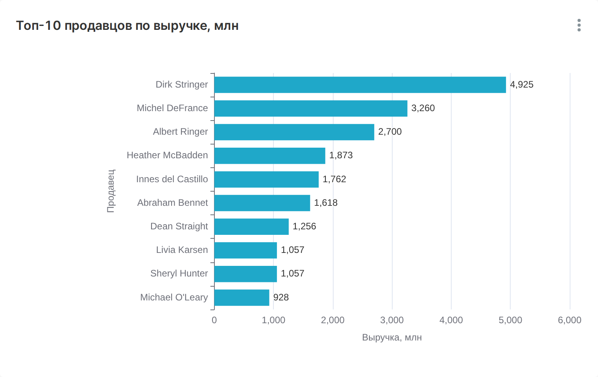
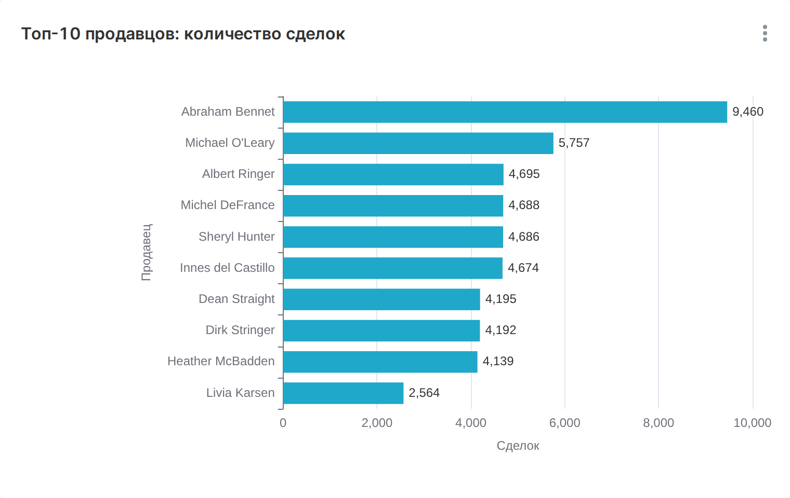
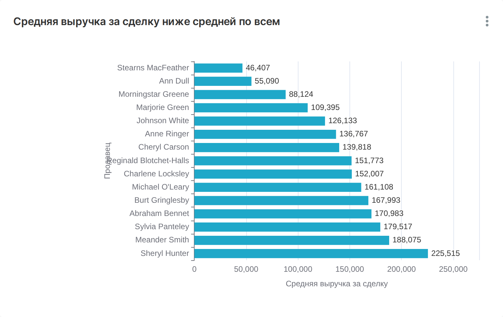
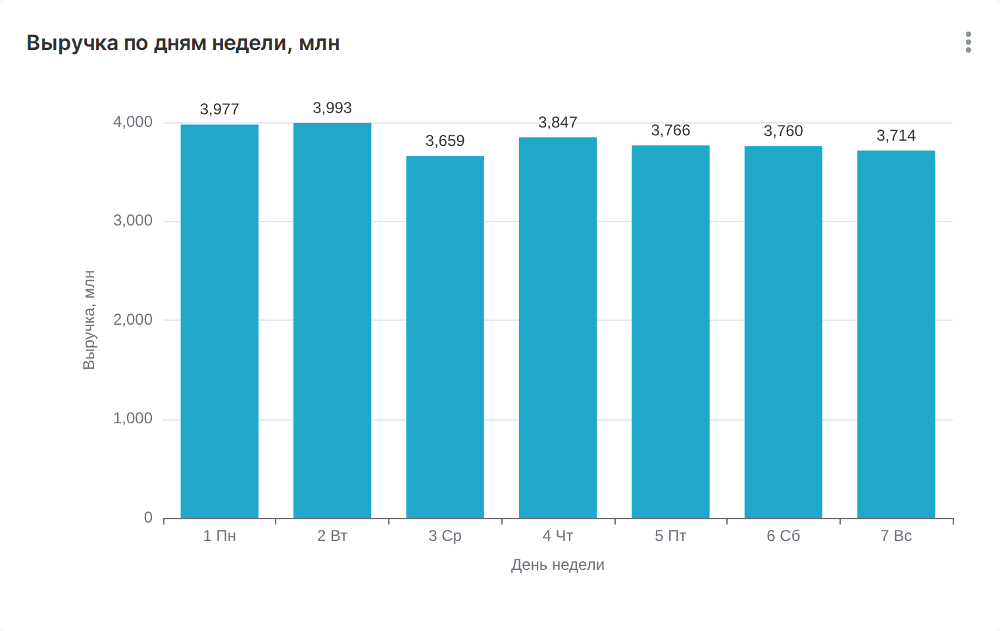
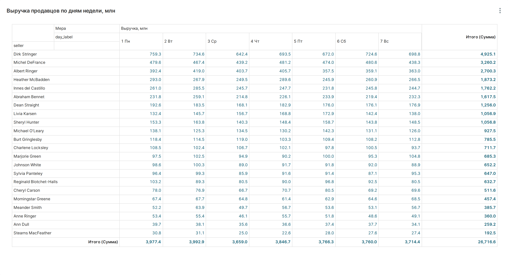
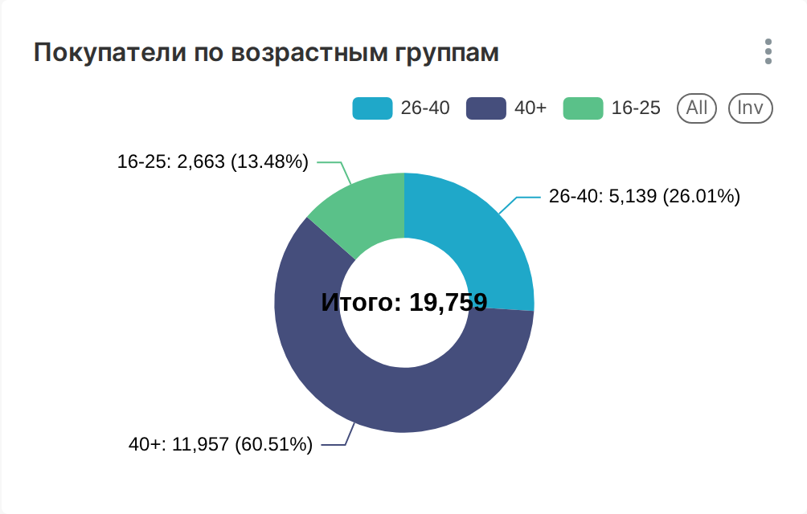
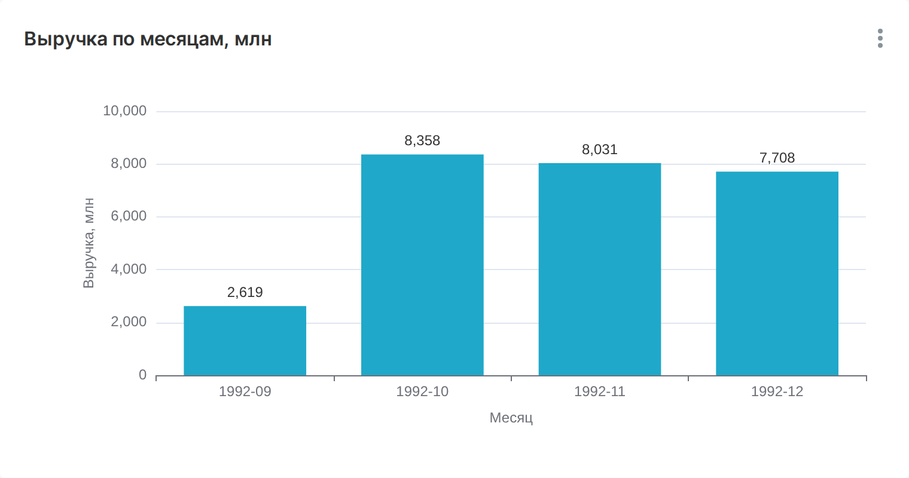
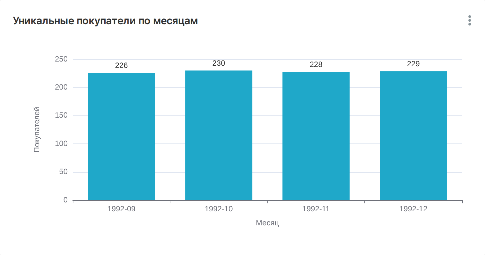
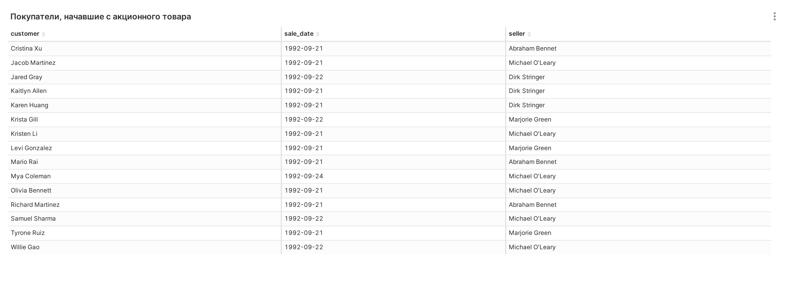
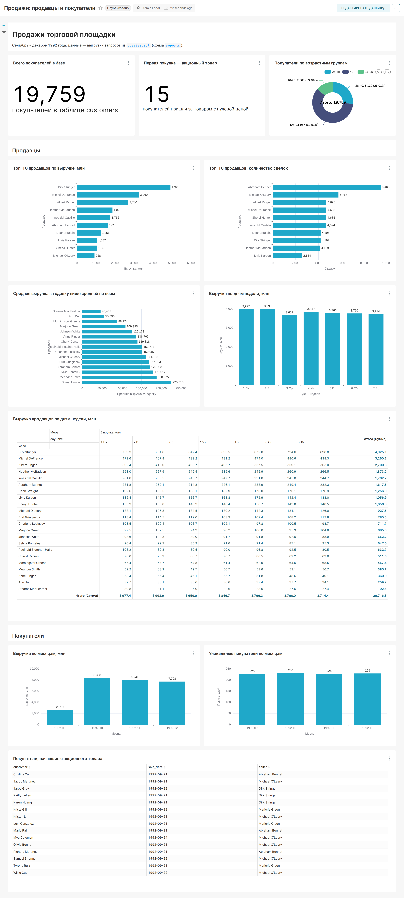

Анализ работы продавцов и поведения покупателей
Период данных: 21.09.1992 – 29.12.1992, 100 000 сделок
Kichigin Sergey · BI-аналитик
Дашборд со всеми графиками: http://localhost:8088/superset/dashboard/sales/ — локальный Superset проекта (запуск: make up dashboard, выгрузка дашборда — superset/export/dashboard.zip в репозитории github.com/kicha3007-boop/bi-analyst-project-92).





У каждого продавца выручка распределена по дням ровно (например, Dirk Stringer: от 642 млн в среду до 759 млн в понедельник), поэтому разрыв между продавцами объясняется не графиком работы, а размером сделок.




Дашборд: http://localhost:8088/superset/dashboard/sales/ · SQL-запросы — queries.sql в репозитории github.com/kicha3007-boop/bi-analyst-project-92
